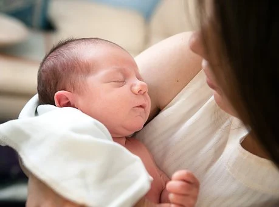

Pandemic Break Up
Recently, celebrity chef Manaba and actress Minerva
has broken up.
according to PEP.ph, chef Manaba said that their long distance
relationship has been the reason of their break up.
"To be honest, being in a LDR has been dificult for us, it was hard
for the both of us" chef Manaba stated "we didn't expect it
to be this difficult. We tried."
They broke up in December, they were suppose to celebrate their 5th
anniversary on February.
both parties agreed to the break up.
they both started their LDR back in 2020 because of the pandemic actress
Minerva had to go home in Italy
chef Manaba was also a singer while actress Minerva was
a theater performer and has a youtube channel.
"as time went by, it became too much for us, both of us were both
struggling with this" said chef Manaba. "maintaining our
relationship was starting to get difficult, it's hard when your
partner isn't ther with you along the way."
chef Manaba also said that getting back to the Philippines was
difficult because of the safety percautions during the pandemic.
"Up until now, she's still in Italy, the flights were always fully booked
and the safety precautions was a nightmare." said chef Manaba
regardless, they still remained friends, there were no hard feelings
involved.

Farewell director
Award-winning director Eduardo has passed away.
He was only 41 years old.
According to a statement sent by his sister Clara to PEP.ph,
Eduardo died at St. Luke’s Medical Center in Quezon City on Feb. 21.
“It is with great sorrow that we announce the passing of Eduardo,”
said her statement. “He has been diagnosed with lymphoma last year.”
A wake will be held Feb. 24 - 26 at Arlington Memorial Chapels
in Quezon City.
Eduardo is known for films such as “Kid's Home”
“Palitan” “Grandmother Igna” “Ordinary Family” and “Decent guys”
for which he won as Cinemalaya best director in 2019.

Lucky Guess!
The lucky bettor, who was actually Kerby
in Cavite bagged the PHP42 million jackpot prize
in Monday night's Mega Lotto 6/45 draw.
In an advisory Tuesday, the Philippine Charity Sweepstakes Office
(PCSO) said the lucky bettor guessed the winning combination of
01-02-03-04-05-06 with a jackpot of PHP50,000,000.
The winning ticket was bought in Tanza, Cavite.
To claim the check, the bettor must go to PCSO's main office in
Mandaluyong City and present the winning ticket and two ID cards.
As provided in the Tax Reform for Acceleration and Inclusion law,
lotto winnings of more than PHP10,000 shall be subject to a 20-percent
final tax. A total of 178 bettors won PHP32,000 each for guessing five out of
the six winning digits; 5,065 will get PHP1,000 each for four correct
digits, and 53,875 will settle for PHP30 each for three digits.
Prizes not claimed within a year shall be forfeited.
The Mega Lotto 6/45 is drawn on Monday, Wednesday, and Friday.
This is the seventh time this month that a sole bettor bagged the
jackpot prize of the government’s lottery games.

Finally, a Baby
Mel Rose has officially started a family with her
boyfriend Franko.
In an social media post, she happily announced that she’s
finally able to play the most important role of her life – that is,
being a mom.
“finally!!! the moment that i've always been waiting for, the most
important moment in my life. I will finally be a certified mom!!
” she wrote.
She jokingly added, “Yes, I have a womb everyone,
I will say my thanks to my family, friends, and
supportive gossip buddies, celevrated, prayed and continued to pray for
our family.
“Waaaaaah! Huhuhu, I have a family now, this is making me cry,” she added.
The pregnancy news was a confirmation of speculations that she
is pregnant after she backed out from attending a swimming competition.
She was replaced by Renna.
Friends from college were quick to congratulate the couple, including
Jaela, Rochell.
“My heart is so happy for the 2 of you. So excited for you sis.
Congratulations for such a beautiful blessing!” wrote Euly, who like
Renna is a swimmer.
Trisha reacted that finally she could attend kiddie parties without
feeling out of place.
“In birthday parties, I have a craddled baby. I won't be out of place!”
she said.
Congratulations are in order to the new mom!